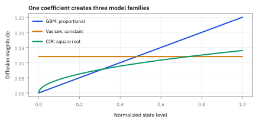
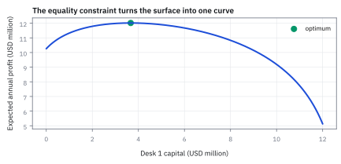
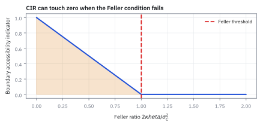
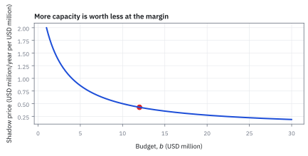

12.4 Lagrange Multipliers — Equality Constraints
หาคำตอบเมื่อถูกบังคับให้อยู่บนเส้นขอบ
หัวหน้าฝ่ายเทรดมีทุนความเสี่ยง \$12 ล้าน แบ่งให้สองเดสก์ เดสก์ 2 เก่งกว่าเดสก์ 1 สองเท่า แบ่งครึ่งได้กำไร 11.675 ล้าน แบ่งตามฝีมือ 4 : 8 ได้ 12.008 ล้าน ควรแบ่งเท่าไร และถ้าได้ทุนเพิ่มอีก 1 ล้าน กำไรเพิ่มเท่าไร?
เฉลย: แบ่ง 3.667 กับ 8.333 ล้าน ได้ 12.015 ล้านต่อปี เดสก์ที่เก่งกว่าสองเท่าได้เงิน 2.27 เท่า ตัวคูณ Lagrange 0.4286 บอกว่าทุนล้านถัดไปทำกำไรราว \$428,571 ต่อปี แต่เพิ่มเต็ม 1 ล้านได้จริง 413,957 เพราะราคาของเงินลดลงระหว่างทาง
Lagrange multiplier ปรับ gradient ของ constraint ให้สมดุลกับ gradient ของ objective เพื่อหาคำตอบบน equality constraint
multiplier ไม่ได้ตัดสายจูง แต่บอกว่าข้อจำกัดดึงแน่นเพียงใด; งานจริงใช้จัด allocation ที่ต้องรวมเป็น budget ตามกำหนด
ศัพท์ที่ใช้ในหัวข้อนี้
- equality constraint
- ข้อกำหนดที่ฝั่งซ้ายต้องเท่าค่าหนึ่งพอดี ใช้บังคับ budget หรือ exposure ที่ต้องครบ
- Lagrangian
- objective ที่รวม constraint residual ผ่านตัวคูณ ใช้เปลี่ยนปัญหามีข้อจำกัดเป็นระบบสมการ stationarity
- Lagrange multiplier
- ตัวคูณของ constraint residual ซึ่งที่ optimum อ่านเป็น marginal value ของการผ่อนข้อจำกัดหนึ่งหน่วย
- shadow price
- การเปลี่ยน optimum value โดยประมาณเมื่อขยับ right-hand side หนึ่งหน่วย ใช้ตัดสินว่าควรซื้อ capacity เพิ่มหรือไม่
- diminishing returns
- คุณสมบัติที่ทุนเพิ่มแต่กำไรส่วนเพิ่มลดลง ใช้จำลอง market impact และข้อจำกัดของ strategy capacity
- liquidity
- ความสามารถในการซื้อขายขนาดที่ต้องการโดยราคาไม่เสียเปรียบมาก ใช้จำกัด capacity และประเมินต้นทุนของ desk
สัญลักษณ์ที่ใช้ในหัวข้อนี้
| สัญลักษณ์ | ความหมาย | หน่วย |
|---|---|---|
| $x_1,x_2$ | จำนวนหน่วย \$1 ล้าน ของ risk capital ที่จัดสรรให้ desk 1 และ 2 | ไม่มีหน่วย (1 หน่วย = \$1 ล้าน) |
| $b$ | จำนวนหน่วย \$1 ล้าน ของ risk-capital budget รวม | ไม่มีหน่วย (1 หน่วย = \$1 ล้าน) |
| $F(x)$ | expected annual profit รวม | USD million ต่อปี |
| $g(x)$ | ทุนที่ใช้รวม | USD million |
| $\nu$ | Lagrange multiplier ของ budget | USD million profit ต่อปี ต่อ \$1 ล้าน capital |
| $\mathcal L$ | Lagrangian ของ allocation problem | USD million profit ต่อปี |
ที่มาที่ไป: เมื่อเดินไปทางไหนก็ได้ไม่ได้อีกต่อไป
เครื่องมือในสองหัวข้อก่อนหน้าใช้ได้เมื่อเดินไปทางไหนก็ได้ แต่ปัญหาจัดพอร์ตไม่เป็นแบบนั้น เพราะน้ำหนักต้องรวมกันเป็นหนึ่งเสมอ
การเดินตามความชันโดยไม่สนเงื่อนไขนั้นจะพาออกนอกพื้นที่ที่ทำได้จริงทันที
วิธีของ Lagrange ที่เจอในหัวข้อ 11.4 แก้เรื่องนี้ได้ตรง ๆ คือติดราคาให้เงื่อนไข แล้วปัญหาที่มีข้อบังคับจะกลายเป็นปัญหาที่ไม่มีข้อบังคับ ซึ่งเครื่องมือเดิมใช้ได้เลย
ของแถมที่มีค่าที่สุดคือราคาที่ติดให้นั้น มันบอกตรง ๆ ว่าถ้าได้วงเงินเพิ่มอีกหนึ่งหน่วย จะทำกำไรเพิ่มได้เท่าไร ซึ่งเป็นตัวเลขที่เอาไปขอเพิ่มวงเงินได้จริง
ที่มาของ Lagrange Multipliers: จากกลศาสตร์คลาสสิกสู่ราคาเงาในเศรษฐศาสตร์
Joseph-Louis Lagrange นักคณิตศาสตร์ชาวอิตาลี-ฝรั่งเศส ตีพิมพ์วิธีนี้ในหนังสือ Mécanique analytique เมื่อปี 1788 ปัญหาดั้งเดิมของเขาคือการเคลื่อนที่ของอนุภาคภายใต้ข้อจำกัดทางกายภาพ เช่น ลูกปัดที่ร้อยอยู่บนขดลวด หรือดาวเคราะห์ที่เคลื่อนที่ตามแรงดึงดูด ก่อนหน้านั้น นักวิทยาศาสตร์ต้องพยายามเปลี่ยนระบบพิกัดเพื่อกำจัดตัวแปรออกทีละตัว ซึ่งในระบบที่มีหลายวัตถุ การแก้สมการกำจัดตัวแปรจะซับซ้อนจนแทบเป็นไปไม่ได้
Lagrange เสนอวิธีใหม่โดยไม่ต้องกำจัดตัวแปรทิ้ง แต่เพิ่มตัวแปรผู้ช่วยเข้าไปหนึ่งตัวต่อหนึ่งข้อจำกัด เพื่อทำหน้าที่เสมือนแรงดึงที่คอยตรึงระบบไว้บนเส้นขอบ ต่อมา Paul Samuelson และ Harold Hotelling ได้นำวิธีนี้มาใช้ในทฤษฎีเศรษฐศาสตร์และการเงิน โดยตีความตัวคูณนี้ใหม่ให้เป็น shadow price หรือมูลค่าเพิ่มต่อหนึ่งหน่วยทรัพยากร ซึ่งเป็นหัวใจสำคัญของการจัดสรรทุนในปัจจุบัน
โจทย์: แบ่งทุนความเสี่ยงให้สองเดสก์
โจทย์ให้อะไรมาบ้าง: เดสก์ 1 ทำกำไรคาดหวัง 2 ln(1 + x₁) ล้านดอลลาร์ต่อปี เดสก์ 2 ทำได้ 4 ln(1 + x₂) ใช้ ln เพราะยิ่งใส่เงินมาก market impact ยิ่งกินกำไรส่วนเพิ่ม เงินต้องใช้ครบ 12 ล้านพอดี
หน่วย: ให้ $x_1,x_2,b$ นับจำนวนหน่วย \$1 ล้าน จึงเป็น dimensionless counts และเข้า logarithm ได้; $F$ เป็น stylized expected annual P&L หน่วย USD million/year รูป logarithmic จึงทำให้ P&L เพิ่มแต่ช้าลงเมื่อ capacity โตขึ้น เป็นแบบจำลอง ไม่ใช่การรับประกันผลจริง
ขั้นที่ 1 — สร้าง Lagrangian โดยคงหน่วย
เมื่อถูกบังคับให้อยู่บนเส้นขอบ จะหาจุดสูงสุดด้วยการหาที่ความชันเป็นศูนย์ไม่ได้ วิธีแก้คือรวมข้อบังคับเข้าไปในเป้าหมาย โดยติดราคาให้มัน
$x_1,x_2,b$ เป็น counts ของ \$1 ล้าน จึงไม่มีหน่วย $F$ เป็น USD million/year และ $\nu$ เป็นกำไรส่วนเพิ่มเมื่อ budget เพิ่มอีกหนึ่งหน่วย \$1 ล้าน ที่จุดที่ข้อจำกัดเป็นจริง ส่วนที่คูณ ν เป็นศูนย์ L จึงเท่ากับ F ทุกประการ เราแค่ตั้งกล้องใหม่ ไม่ได้เปลี่ยนโจทย์
ที่ลบแทนที่จะบวกเป็นแค่ธรรมเนียม ถ้าบวกจะได้ ν เครื่องหมายตรงข้าม แต่ x เท่าเดิมเป๊ะ เลือกลบเพราะทำให้ ν เป็นบวกเมื่อทุนเพิ่มแล้วดีขึ้น ตรงกับสัญชาตญาณเรื่องราคา เลือกแบบไหนแล้วต้องใช้จนจบข้อ
ขั้นที่ 2 — ที่มาทางเรขาคณิต: ระนาบสัมผัสและความสมดุลของ Gradient
สูตรข้างล่างแสดงหลักการทางเรขาคณิตของการสัมผัสกันระหว่างเส้นชั้นความสูงของ objective และเส้นขอบของข้อจำกัด เมื่อแนวตั้งฉากของทั้งสองเส้นขนานกัน การเพิ่มค่าบนเส้นขอบจะเป็นไปไม่ได้อีกต่อไป
บนเส้นขอบของข้อจำกัด ทุกทิศทาง $d$ ที่เคลื่อนที่ได้โดยไม่หลุดจากเส้นขอบ จะต้องตั้งฉากกับ gradient ของข้อจำกัดเสมอ ในโจทย์นี้ $\nabla g=(1,\ 1)$ ไม่เป็นศูนย์ เส้นขอบจึงมีทิศที่ชัดเจน
หากที่จุดนั้น gradient ของ objective ไม่ได้ตั้งฉากกับทิศทาง $d$ ด้วย เราจะสามารถขยับตามทิศ $d$ หรือ $-d$ เพื่อเพิ่มค่า objective ให้สูงขึ้นได้ทันทีโดยไม่ละเมิดข้อจำกัด
ดังนั้นที่จุดสูงสุด $x^\star$ ทุกทิศที่เดินตามเส้นขอบได้ต้องตั้งฉากกับ $\nabla f$ ด้วย ในสองมิติ ทิศที่ตั้งฉากกับทิศเดียวกันคือแนวเดียวกัน $\nabla f$ จึงต้องขนานกับ $\nabla g$ พอดี เมื่อ vector สองตัวชี้ในแนวเดียวกัน ตัวคูณ scalar $\nu$ จึงทำหน้าที่ปรับขนาดให้สมดุล กลายเป็นสมการของ Lagrangian ที่ derivative ย่อยเทียบกับ $x$ เป็นศูนย์
ขั้นที่ 3 — Stationarity ทำให้ marginal P&L เท่ากัน
เงื่อนไขที่ได้มีความหมายทางธุรกิจตรง ๆ คือเงินก้อนสุดท้ายที่ใส่ในแต่ละที่ ต้องให้ผลตอบแทนเท่ากันหมด ไม่งั้นย้ายเงินแล้วดีขึ้น
derivative ของ 2 ln(1 + x₁) คือ 2/(1 + x₁) ตามกฎลูกโซ่ พจน์ของอีกเดสก์ไม่มี x₁ จึงหายไป และพจน์ข้อจำกัดเป็นเส้นตรงใน x₁ จึงเหลือ −ν
แต่ละ desk รับทุนจน marginal expected P&L ต่อ \$1 ล้าน เท่ากับ shadow price $\nu$ ใส่เงินจนกำไรส่วนเพิ่มพอดีกับต้นทุนของเงิน กฎเดียวกับที่โรงงานใช้ตัดสินใจผลิตชิ้นสุดท้าย
บรรทัดสุดท้ายคือของฟรีของวิธี Lagrange ใส่ตัวแปร ν เพิ่มหนึ่งตัว ได้สมการเพิ่มหนึ่งสมการ และสมการนั้นก็คือข้อจำกัดเดิมที่กลับมาเอง สามสมการ สามตัวไม่รู้ค่า x₁, x₂, ν พอดี
ขั้นที่ 4 — แก้ระบบทีละตัว
แก้ระบบสมการโดยเขียนทุกตัวให้อยู่ในรูปของราคาเงาตัวเดียวก่อน สูตรข้างล่างเป็นพีชคณิตล้วน แต่เขียนออกมาให้ครบเพราะมันคือจุดที่หลายคนข้ามแล้วหลงทาง ผลลัพธ์บรรทัดสุดท้ายจะถูกแทนกลับเพื่อหาน้ำหนักจริงในขั้นถัดไป
บรรทัดแรกตัดหน่วยออกจากตัวคูณ เพื่อให้ที่เหลือเป็นเลขล้วน คำนวณง่ายขึ้น สามบรรทัดถัดมาแก้เงื่อนไขของขั้นที่ 3 ทีละข้าง คูณไขว้แล้วย้าย 1 ไปอีกข้าง
หารสองคำตอบแรกกันได้ (1 + x₂)/(1 + x₁) = 4/2 = 2 ν ตัดกันหมด ทุนบวกหนึ่งของเดสก์ 2 เป็นสองเท่าของเดสก์ 1 เสมอไม่ว่างบเท่าไร อัตราส่วนถูกล็อกด้วยฝีมืออย่างเดียว งบกำหนดแค่ระดับ
จากนั้นใส่ข้อบังคับเรื่องงบที่โจทย์ให้ คือทุนรวมต้องใช้ให้ครบ แทนสองคำตอบข้างบนลงไปแล้วรวมพจน์ เศษ 2 กับ 4 บวกกันได้ 6 และ −1 สองตัวรวมเป็น −2 เหลือสมการที่มีตัวไม่รู้ค่าตัวเดียว แก้ครั้งเดียวจบ ผลคือราคาเงาเป็น function ของงบ ยิ่งงบมาก ราคาเงายิ่งต่ำ ซึ่งตรงกับสามัญสำนึก
ขั้นที่ 5 — แทน budget \$12 ล้าน
แทนงบประมาณจริงลงไป จะได้ค่าราคาเงาและการจัดสรรที่เป็นตัวเลข
หารด้วย 3/7 คือคูณ 7/3 allocation รวมเป็น \$12 ล้าน พอดี และกำไรส่วนเพิ่มของสองเดสก์เท่ากันเป๊ะที่ 0.428571 ตามขั้นที่ 3 เลข 14 = 12 + 2 โดย 2 มาจาก +1 ใน ln(1 + x) ของสองเดสก์ ถ้าเป็น ln x เฉย ๆ จะได้ 6/ν = 12 และ ν = 0.5 เลข +1 เล็ก ๆ นี้มีผลจริง
เดสก์ที่เก่งกว่าสองเท่าได้เงิน 2.27 เท่า ไม่ใช่ 2 เท่า เพราะ +1 ทำหน้าที่เหมือนต้นทุนก้อนแรกที่ทั้งสองเดสก์จ่ายเท่ากัน ทุนบวกหนึ่งเป็น 2 เท่าเป๊ะ (28/3 กับ 14/3) แต่พอลบ 1 ออกจากทั้งคู่ ตัวเล็กถูกลบแรงกว่าเชิงสัดส่วน เดสก์ที่เก่งกว่าจึงควรได้ส่วนแบ่งมากกว่าสัดส่วนฝีมือ
ขั้นที่ 6 — คำนวณ P&L ที่ optimum
คำนวณผลตอบแทนที่จุดนั้น เพื่อใช้เทียบในขั้นถัดไป
$1+x_1=14/3$ และ $1+x_2=28/3$ มาจาก allocation ที่แก้ได้ เคล็ดคือ 28/3 = 2 × 14/3 จึงแยก ln ของผลคูณเป็นผลบวก คิดครั้งเดียวใช้ได้สองที่ ได้ \$12.015 ล้านต่อปีตาม model
ขั้นที่ 7 — ทำไมเดาเองไม่ได้: แบ่งครึ่งกับแบ่งตามฝีมือ
ลองสองวิธีที่คนมักเดา แล้วเทียบกับคำตอบของขั้นที่ 5 และ 6
เก่งกว่า 2 เท่าไม่ได้แปลว่าควรได้เงิน 2 เท่า ตัวคูณ 2 กับ 4 คูณอยู่กับ ln ซึ่งโค้ง กำไรส่วนเพิ่มของแต่ละเดสก์จึงลดลงคนละอัตรา การจัดสรรที่ถูกต้องดูที่กำไรส่วนเพิ่มของเงินก้อนสุดท้าย ไม่ใช่ดูที่ฝีมือรวม
4 : 8 เกือบชนะแล้ว 12.008 กับ 12.015 ปัญหาแบบนี้ยอดแบนใกล้จุดสูงสุด นี่คือเหตุผลที่ต้องใช้คณิตศาสตร์ ไม่ใช่สายตา
ขั้นที่ 8 — อ่าน ν เป็นเงิน: \$428,571 ต่อปีต่อทุนหนึ่งล้าน
หน่วยของ ν คือล้านดอลลาร์กำไรต่อล้านดอลลาร์ทุน จึงเป็นอัตราส่วนล้วน แปลงเป็นเงินแล้วเอาไปตัดสินใจเรื่องขอวงเงินเพิ่มได้ทันที
ทุนเพิ่ม \$1 ล้านทำกำไรเพิ่มราว \$428,571 ต่อปี หรือผลตอบแทนส่วนเพิ่ม 42.86% ต่อปี ถ้ากู้ได้ที่ดอกเบี้ย r ถูกกว่านี้ให้กู้ แพงกว่านี้ไม่กู้ จุดคุ้มทุนพอดีคือดอกเบี้ย 42.86% บรรทัดท้ายเช็กด้วยการขยับงบนิดเดียว ได้อัตรา 0.4284 ใกล้ ν
ν ไม่ใช่ตัวช่วยคำนวณ แต่เป็นคำตอบอีกครึ่งหนึ่ง คนส่วนใหญ่หา x ได้แล้วทิ้ง ν ไป ทั้งที่ ν คือตัวเลขที่เอาไปเจรจาได้ ในภาษาของหัวข้อ 11.3 มันคือตัวแปร dual ในหัวข้อ 12.6 มันคือ u ของเงื่อนไข Karush-Kuhn-Tucker (KKT) และในภาษาบัญชีมันคือ shadow price สามชื่อของสิ่งเดียวกัน
ขั้นที่ 9 — พิสูจน์ที่มาของ Shadow Price ผ่าน Chain Rule
หกบรรทัดนี้พิสูจน์ทฤษฎีบท Envelope Theorem ในกรณีพื้นฐาน แสดงให้เห็นอย่างชัดเจนว่าทำไมตัวคูณของ Lagrange จึงมีบทบาทเป็น shadow price หรือความคุ้มค่าของการคลายข้อจำกัด
เมื่อเพิ่มขนาดของงบประมาณ $b$ ค่าผลตอบแทนสูงสุด $F^\star(b)$ จะขยับตาม การหา derivative ของผลลัพธ์นี้เทียบกับ $b$ โดยตรงใช้ chain rule กระจายผ่านตัวแปรการตัดสินใจทุกตัว
จังหวะสำคัญคือการแทนเงื่อนไขความสมดุล $\nabla f=\nu\nabla g$ เข้าไปในสมการ ทำให้เราสามารถดึงตัวคูณ $\nu$ ออกมาข้างหน้า derivative ของข้อจำกัดได้
และเนื่องจากจุดคำตอบต้องสอดคล้องกับข้อจำกัด $g(x^\star)=b$ เสมอ derivative ของข้อจำกัดเทียบกับ $b$ จึงมีค่าเท่ากับ 1 พอดี ผลลัพธ์สุดท้ายจึงพิสูจน์ว่าอัตราการเติบโตของผลลัพธ์สูงสุดเท่ากับตัวคูณ $\nu$ พอดีเป๊ะ
ขั้นที่ 10 — ทดสอบ shadow price ด้วย budget ใหม่
ทดสอบว่าราคาเงาแปลว่าอะไรจริง ๆ โดยเพิ่มงบอีกหนึ่งหน่วยแล้วดูว่าได้เพิ่มเท่าไร
b ไม่อยู่ในสมการ derivative เทียบ x เลย สมการสองตัวแรกจึงเหมือนเดิมทุกตัวอักษร งบเปลี่ยนแค่ระดับ ไม่เปลี่ยนรูปร่าง ν ลดจาก 0.4286 เหลือ 0.4 เพราะมีเงินมากขึ้น เงินก้อนถัดไปจึงมีค่าน้อยลง ν จึงไม่ใช่ค่าคงที่ แต่คือ 6/(b + 2)
เงินล้านใหม่แบ่ง 1 : 2 ตามฝีมือพอดี ต่างจากยอดรวมที่แบ่ง 11 : 25 เพราะพจน์ −1 ไม่ขยับตาม เงินก้อนใหม่จึงควรแบ่งตามฝีมือตรง ๆ แต่ไม่ต้องรื้อก้อนเดิม ถ้ามักง่ายยัดล้านใหม่ให้เดสก์ 2 ทั้งหมด (F naive) ได้ 12.422390 แพ้คำตอบจริง \$6,826 ต่อปีฟรี ๆ
ขั้นที่ 11 — ν ทำนายสูงไป 3.53%: เพราะมันเป็นความชันที่จุดเดียว
เทียบกำไรที่เพิ่มจริงกับที่ ν ทำนาย แล้วอธิบายช่องว่างด้วยความโค้งของ F⋆
ν ทำนาย \$428,571 แต่ได้จริง 413,957 สูงไป \$14,614 เพราะ ν เองตกจาก 0.4286 เหลือ 0.4 ระหว่างที่เติมเงิน ค่าเฉลี่ยหยาบ ๆ ของสองราคาได้ 0.414286 ใกล้ของจริงมาก และถ้าเติมพจน์ความโค้งแบบ Taylor อันดับสอง ได้ 0.413265 เหลือคลาดแค่ 0.7%
ν ไม่ได้ผิด มันเป็น derivative ความชันของเส้นสัมผัสที่จุดเดียว การเอาไปทำนายการขยับเต็ม 1 หน่วยคือการยืดเส้นสัมผัสออกไปไกล ยิ่ง function โค้งคว่ำยิ่งทำนายสูงเกินเสมอ เหมือน Delta ของ option ที่ต้องใช้ Gamma แก้ในบทที่ 14
ขั้นที่ 12 — สูตรปิด F⋆(b) พิสูจน์ว่า ν เท่ากับอัตราเปลี่ยนของกำไรเป๊ะ
แทน x₁ = 2/ν − 1 และ x₂ = 4/ν − 1 กลับเข้า F พร้อม ν = 6/(b + 2) จะได้กำไรที่ดีที่สุดเป็น function ของงบ
ค่าคงที่สองก้อนท้ายหายเมื่อหา derivative เหลือ 6/(b + 2) ซึ่งเท่ากับ ν ทุกค่าของ b ไม่ใช่แค่ใกล้เคียง และผลต่างจริงคือผลรวมของ ν ตลอดช่วงงบ ได้ 0.413957 ตรงกับขั้นที่ 11 ทุกหลัก ln(15/14) = 0.068993 ต่ำกว่า 1/14 = 0.0714 เล็กน้อยเสมอ ln(1 + x) ต่ำกว่า x ตลอด
ขยับงบให้เล็กลงเรื่อย ๆ แล้ว ν โผล่มาเป๊ะ
| งบ b | F⋆(b) | ผลต่างจาก b = 12 | ผลต่างต่องบที่เพิ่ม |
|---|---|---|---|
| 12.00 | 12.015259 | — | — |
| 12.01 | 12.019543 | 0.004284 | 0.428418 |
| 12.10 | 12.057964 | 0.042705 | 0.427048 |
| 12.50 | 12.225807 | 0.210548 | 0.421096 |
| 13.00 | 12.429216 | 0.413957 | 0.413957 |
| 14.00 | 12.816447 | 0.801188 | 0.400594 |
ยิ่งขยับเล็ก ยิ่งเข้าใกล้ ν = 0.428571 ที่ 0.01 คลาดแค่ 0.04% นี่คือนิยามของ derivative ที่ทำงานอยู่ตรงหน้าด้วยตัวเลขจริง ขอวงเงินเพิ่มเล็กน้อยใช้ ν ได้เลย ขอเพิ่มก้อนใหญ่ต้องแก้ปัญหาใหม่ทั้งข้อ
ขั้นที่ 13 — ทำไมคำตอบเป็น global maximum
ปิดช่องสงสัยสุดท้าย ว่าจุดที่ได้เป็นจุดที่ดีที่สุดจริง ไม่ใช่แค่จุดที่พื้นราบ
h₁₁ กับ h₂₂ คือสองบรรทัดแรก diagonal entries ติดลบเมื่อ allocations ไม่ต่ำกว่า zero และ cross-partials เป็น zero เพราะสองเดสก์ไม่กวนกัน Hessian จึงลบทุกทิศทุกจุด objective strictly concave บน feasible budget line จุดที่ได้จึงเป็นจุดสูงสุดของทั้งเส้น ไม่ใช่แค่ยอดเนินท้องถิ่น
แล้วเอาไปใช้ทำอะไรได้จริงบ้าง
การหาคำตอบเมื่อถูกบังคับให้อยู่บนเส้นขอบ คือรูปแบบของปัญหาจัดพอร์ตทุกปัญหา
ใช้หาพอร์ตที่ดีที่สุดภายใต้เงื่อนไขว่าน้ำหนักต้องรวมเป็นหนึ่ง ซึ่งเป็นเงื่อนไขที่มีเสมอ
ใช้อ่านราคาเงาของแต่ละข้อจำกัด ซึ่งบอกว่าถ้าผ่อนข้อนั้นจะได้ผลตอบแทนเพิ่มเท่าไร และเป็นข้อมูลที่ใช้ต่อรองขอเพิ่มวงเงินได้
ใช้เป็นฐานของทุกหัวข้อที่เหลือในบทนี้ รวมถึง Markowitz และเงื่อนไขสำหรับข้อจำกัดแบบอสมการในหัวข้อ 12.6
Figure 12.4a — ผลตอบแทนส่วนเพิ่มที่ลดลงของแต่ละโต๊ะ

เส้นกำไรทั้งสองชันช่วงแรกแล้วแบนลง; desk 2 ให้กำไรสูงกว่าแต่ไม่ได้แปลว่าควรรับทุนทั้งหมด เพราะ marginal slope ลดตามขนาด
Figure 12.4b — จุดสัมผัสบนเส้นงบประมาณ

บนเส้นทุนรวม \$12 ล้าน จุดสูงสุดอยู่ที่ allocation 3.667 กับ 8.333; ที่นั่น slopes ของสอง desks เท่ากันที่ 0.428571
Figure 12.4c — กำไรส่วนเพิ่มเท่ากันทุกโต๊ะ

ที่ optimum กำไรส่วนเพิ่มของทั้งสอง desks เท่ากับ shadow price; ถ้าแท่งยังสูงไม่เท่ากัน ทุนยังย้ายแล้วดีขึ้นได้—เหมือนจัดบุฟเฟต์จนคำสุดท้ายอร่อยพอกันทุกจาน
Figure 12.4d — shadow price ลดลงเมื่องบเพิ่ม

เส้น numerical shadow price ลดลงเมื่อทุนโต จึงอธิบายว่าการใช้ราคาที่ budget เดิมทำนายเพิ่ม \$1 ล้าน จะสูงเกิน actual gain เล็กน้อย
คำตอบ — ทุน 12M แบ่งเป็น 3.667 กับ 8.333
คำถาม: ทุน \$12 ล้านควรแบ่งให้สองเดสก์เท่าไร และทุนล้านถัดไปมีค่าเท่าไร?
ของที่มี: ขั้นที่ 3 ถึง 12
คำตอบ: budget \$12 ล้าน แบ่งเป็น 3.666667 กับ \$8.333333 ล้าน และให้ expected annual P&L \$12.015259 ล้าน/year; shadow price แบบ local เท่ากับ \$0.428571 ล้าน/year ต่อทุนเพิ่ม \$1 ล้าน
ตรวจเองใน 10 วินาที: allocation ต้องรวม 3.666667 + 8.333333 = 12 และเมื่อเพิ่ม budget เป็น 13 ค่า P&L จริงเพิ่ม 12.429216 - 12.015259 = \$0.413957 ล้าน/year ซึ่งใกล้ shadow-price estimate แต่ไม่เท่ากันเพราะก้าวไม่เล็กมาก
ที่งบ 13 ล้าน ν = 0.4 แผนเป็น 4 กับ 9 กำไร 12.429216 เพิ่มจริง \$413,957 ν ทำนาย 428,571 สูงไป 3.53% เพราะมันเป็นราคาของเงินก้อนถัดไป ไม่ใช่ราคาเฉลี่ยของทั้งล้าน
แปลว่าอะไร: นี่คือโครงสร้างของการจัดสรร risk capital ทุกแบบ ผลลัพธ์ไม่ใช่แค่ x แต่คือราคาต่อหน่วยของทุน ν ที่ทุกเดสก์ต้องแข่งกันเอาชนะ เดสก์ไหนทำผลตอบแทนส่วนเพิ่มต่ำกว่า 42.86% ควรถูกดึงเงินออกไปเติมให้เดสก์ที่ยังทำได้สูงกว่า ถ้าขอเพิ่มทีเดียว 5 ล้าน ค่าจริงเหลือ 6 ln(19/14)/5 = 0.366 ต่อล้าน การเอา ν ไปคูณก้อนใหญ่คือวิธีสร้างตัวเลขเกินจริงที่พบบ่อยที่สุดในเอกสารขอวงเงิน ส่วนตัวคูณ 2 กับ 4 เป็นแค่ model ตัวเลข 3.667 : 8.333 จึงควรอ่านว่าทิศทาง ไม่ใช่คำสั่งโอนเงิน
โค้ดตรวจการแบ่งทุนและ shadow price
import numpy as np
from math import log
from scipy.optimize import minimize
F=lambda z: 2*log(1+z[0])+4*log(1+z[1])
c={'type':'eq','fun':lambda z: z[0]+z[1]-12}
r=minimize(lambda z: -F(z),[6,6],constraints=[c])
assert np.allclose(r.x,[11/3,25/3],atol=1e-4) and abs(-r.fun-12.015259)<1e-5
assert abs(F([6,6])-11.675461)<1e-6 and abs(F([4,8])-12.007774)<1e-6
fs=lambda b: 6*log(b+2)-6*log(3)+4*log(2)
assert abs(fs(12)-12.015259)<1e-6 and abs(fs(13)-fs(12)-0.413957)<1e-6
assert abs((fs(12.01)-fs(12))/0.01-0.428418)<1e-6 and abs(6/14-0.428571)<1e-6
assert abs(F([11/3,25/3+1])-12.422390)<1e-6 and abs(6*log(19/14)/5-0.366458)<1e-6โค้ดนี้ให้ optimizer มาตรฐานแก้โจทย์เดียวกัน ต้องได้ 11/3 กับ 25/3 และ 12.015259 แล้วตรวจการเดา 6:6 กับ 4:8 สูตรปิด F⋆(b) กำไรที่เพิ่มจริง 0.413957 อัตราที่งบ 12.01 แผนมักง่าย 12.422390 และค่าเฉลี่ย 0.366 ต่อล้านเมื่อขอเพิ่ม 5 ล้าน
กับดัก: อ่าน multiplier เป็นกำไรที่รับประกัน
shadow price เป็น local derivative ภายใต้ functional form และ constraints ชุดเดิม การเพิ่ม budget มากอาจเปลี่ยน liquidity regime หรือทำให้ constraint อื่นเริ่ม binding ต้องแก้ปัญหาใหม่และรายงานช่วงที่ sensitivity ใช้ได้
อย่าลืมสมการที่ derivative เทียบ ν หลายคนได้ x₁ = 2/ν − 1 กับ x₂ = 4/ν − 1 แล้วติดอยู่ตรงนั้นเพราะยังมี ν ที่ไม่รู้ค่า ทางออกคือข้อจำกัดที่กลับมาเป็นสมการปิดระบบ กับดักที่สองคือหน่วย ν = 0.4286 คือกำไรต่อทุน ถ้าอ่านผิดเป็น \$0.43 จะพลาดไปล้านเท่า
ข้อจำกัด: วิธีนี้สมมติอะไร และของจริงเป็นอย่างไร
| เรื่อง | วิธีนี้สมมติว่า | ของจริงเป็นอย่างไร | ผลที่ตามมาเวลาใช้งาน |
|---|---|---|---|
| ชนิดของข้อจำกัด | ข้อจำกัดเป็นสมการ | ข้อจำกัดจริงส่วนใหญ่เป็นอสมการ เช่นห้ามติดลบ | ต้องขยายไปใช้เงื่อนไขชุดที่กว้างกว่าในหัวข้อ 12.6 ซึ่งมีเงื่อนไขเพิ่ม |
| ความหมายของราคาเงา | ราคาเงาใช้ได้ทุกขนาดการผ่อน | ใช้ได้เฉพาะการผ่อนเล็กน้อย | การขอเพิ่มวงเงินเยอะ ๆ แล้วใช้ราคาเงาเดิมคำนวณผลตอบแทนจะผิด |
| จุดที่พบ | จุดที่พบคือจุดที่ดีที่สุด | เป็นแค่จุดที่เงื่อนไขอันดับหนึ่งเป็นจริง | ต้องตรวจความโค้งเพิ่มเสมอ ไม่งั้นอาจได้จุดที่แย่ที่สุดมาแทน |
แถวแรกคือช่องว่างที่ทำให้ต้องมีหัวข้อ 12.6 ต่อ ไม่ใช่จบที่หัวข้อนี้
สรุปที่ใช้ได้จริง
- Lagrangian รวม objective กับ equality constraint โดยไม่ทิ้งหน่วย
- stationarity ทำให้ marginal benefit เท่ากันทุก decision ที่อยู่ภายใน
- multiplier 0.428571 คือ local value ของ budget เพิ่มหนึ่ง USD million ภายใต้ model
- concavity และ feasible-set geometry เป็นเหตุผลที่คำตอบนี้เป็น global maximum
- ทุน 12 ล้าน แบ่ง 3.667/8.333 ได้ 12.015 ล้านต่อปี ν = 6/(b + 2) = 0.4286 ทุนล้านที่ 13 เพิ่มกำไรจริง \$413,957 ไม่ใช่ 428,571